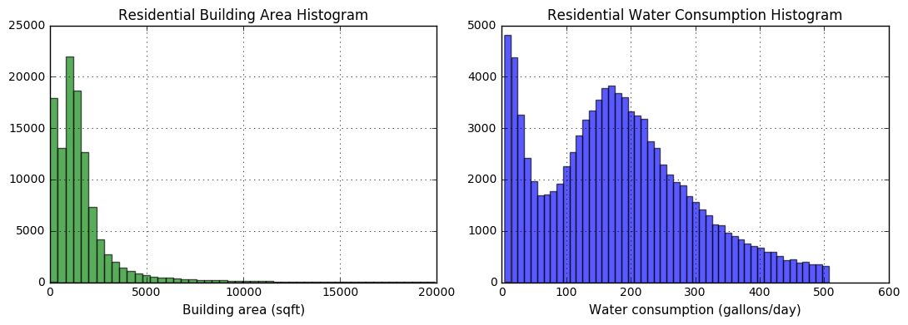
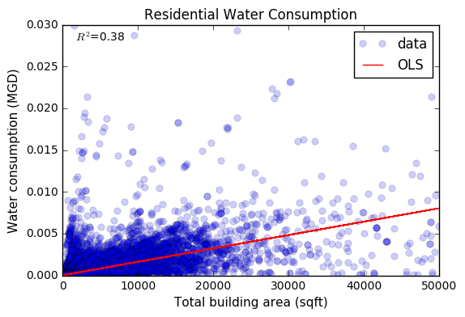
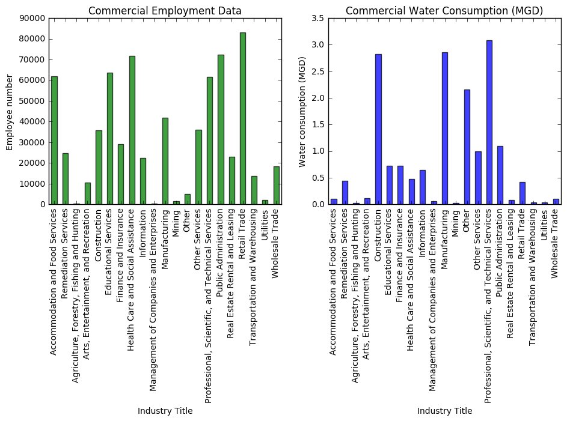
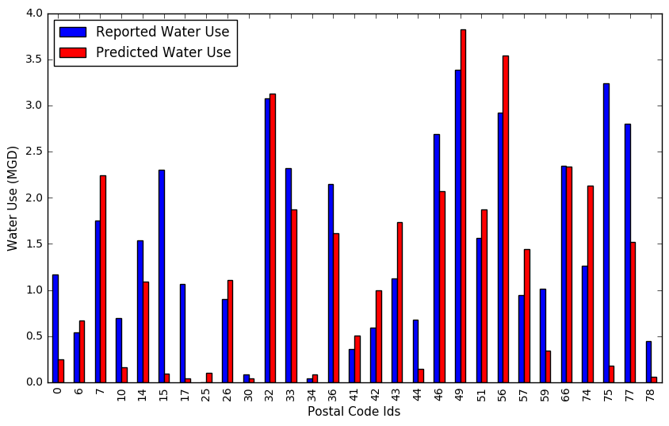
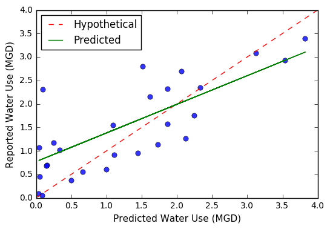

Water Consumption Monitoring
Monitoring and reporting our water usage is an important issue that only recently has been given much attention due to the prolonged drought periods occurring in the US and other parts of the world. Water is a critical component of human ad ecosystem survival that recently has been challenged by the impacts of climate change.
Water consumption is an important metric that is not always documented or even measured. Some utilities offer a fixed rate for their clients that does not reflect their individual water consumption and other might charge per size of connection. Even when the individual water consumption is measured is not reported in publicly available data.
Water is also directly connected to energy consumption and greenhouse gas (GHG) emissions as managing and transporting water is often an energy-intensive activity. By understanding the spatial distribution of water, we can gain insights on the amount of energy required to convey the water to every part of the city and the GHG emitted at the process.
This work is trying to estimate residential and commercial water consumption in a high resolution of building level scale and illustrate the spatial variability of water consumption across a city. By understanding the variability of water consumption, decisions and policies can be put in place to regulate water and offer efficiency programs where they are needed. The work is done for the city of Austin, Texas. The location was chosen as the city of Austin data portal offers measured water consumption in postal code scale that I could compare or predicted water use with and validate my framework.
Data Used
The data used in this work involved building footprints, block level population data and zoning information that were gathered from the Official website of the City of Austin open data portal . From the same source, I got the reported residential and commercial water use for the city of Austin for each postal code. For the commercial buildings, I used data that came from the ESRI Business Analyst dataset . This dataset provides information on the location of all businesses, their NAICS/SIC value and the number of employees they have. Water use values were adopted from a Water Research Foundation report for the city of Austin for per capita residential water consumption and commercial water consumption based on sector type.
Residential Buildings
Firstly, I needed to convert the building footprints into points using the polygon centroid and spatially join all the buildings with the zoning polygons to estimate the building type and identify which identify which buildings are considered residential or mixed use. The buildings were the spatially joined to the city blocks to allocate the residential population. To estimate the population of each building, I had to allocate the population of each block proportionally to the total area of the building. To calculate that the buildings were grouped by block and for each group the proportion of area that each building occupies was calculated. Then the population of each block was allocated to the buildings equivalently to their area proportion. In this step, only the buildings identified as residential or mixed use were used, as the block population refers to the residential population.
The plot below depicts the distribution of the buildings areas and the distribution of water consumption. We can identify that most residential buildings in Austin have a square footage of up to 5000 sf and the water consumption follows a bimodal normal distribution with a mean of 200 gallons/day and some buildings having very low water usage, which probably corresponds to the mixed use buildings as we have not yet included the commercial buildings.

{kind=link}
Given the distributions of buildings for total area and water consumption we performed a regression analysis to identify the correlation between the two variables. The regression plot is shown below which shows some significant correlation between building size and water consumption.

{kind=link}
Commercial Buildings
For the commercial buildings, I used the ESRI data to locate all businesses in Austin and their employee numbers. I then joined the NAICS ids of the businesses to their official description and grouped the business sectors to broader categories that I had water data for. Each business was then allocated to one sector and the selected sectors are shown in the figures below illustrated the total employee numbers and their corresponding water consumption. Again, the water consumption values per sector were sourced from the Water Research Foundation report

{kind=link}
Results Visualization
For visualization, I aggregated the results for water consumption per block and postal code which are shown in the interactive maps below. The maps illustrate the spatial water consumption distribution and highlight the areas with high water consumption. By interacting with the maps, we can identify areas of high residential and commercial water consumption. The spatial distribution illustrates where most of the water is being used in Austin and could reveal areas that efficiency efforts should mostly target.
The water consumption per block is show in the map below. This map aggregates the building specific water consumption by city block for easier visualization. We can identify the areas of Austin where water consumption is higher due to higher population density and/or large water consumers. Irrigation is not included in the map so the results only represent residential and commercial water consumption.
In order to validate our results with existing data, I needed to aggregate the results in a postal code resolution. The resolution of this map is much lower than the previous map. The results are aggregated over larger areas of the city and thus the water consumption is a lot higher. An interesting observation is that in this visualization the city of Austin shows up to have larger water consumption than the surrounding areas, something that could not be identified in the previous map.
Validation
The final step was to validate my predictions with actual measured data from the city of Austin. I imported the measured water consumption values and merged them with my aggregated predictions for each postal code. The figure below shows the comparison of the actual values with my predictions for each postal code. Some postal code areas reached high prediction accuracy but there were some that the prediction was not that good. The mean error for all the postal codes was 20% which means that my predictions were on average 20% different than the actual values. This can most probably be attributed to the fact that I used an average per capita consumption which, in reality, is not always reflected.

{kind=link}
To make the prediction accuracy more clear I am plotting the actual water consumption values against the predicted values from my analysis. If the predictions were 100% accurate then the regression line should follow the diagonal hypothetical line shown below in red. The 20% error calculated before shows in this graph as the actual regression line is slightly different from the hypothetical one.

{kind=link}
Support or Contact
Do you have questions or comments? Please contact Olga Kavvada: @okavvada or email okavvada@gmail.com.